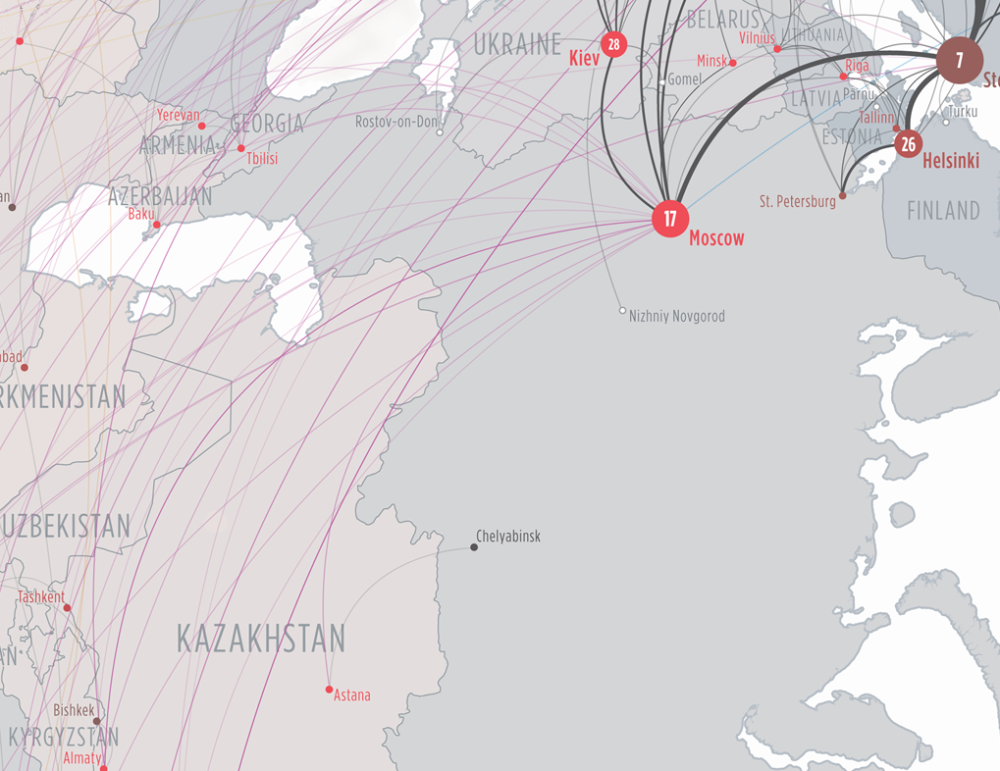
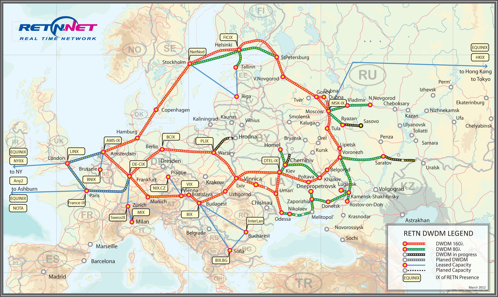
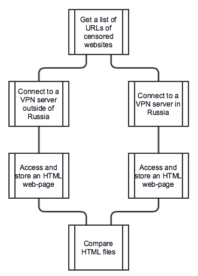
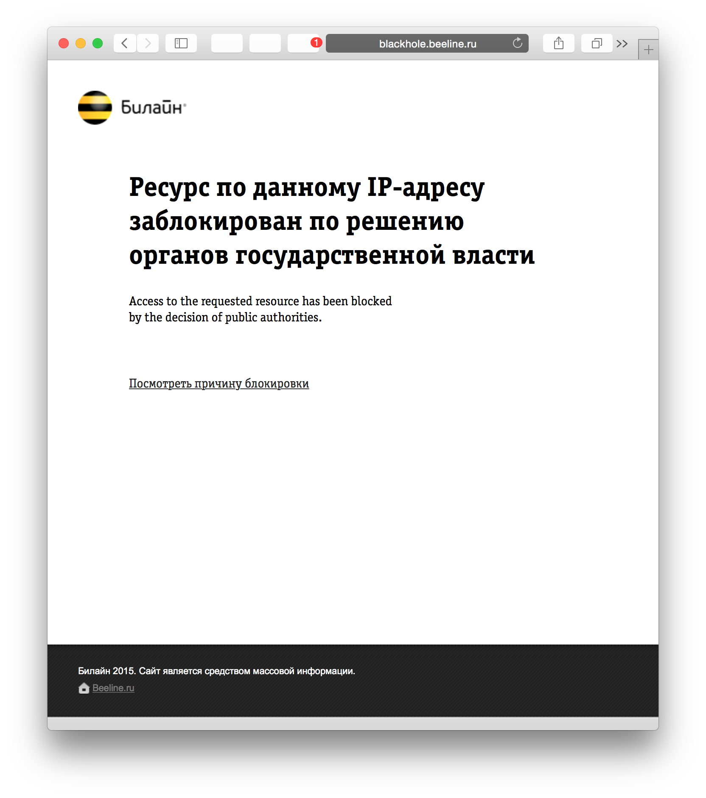
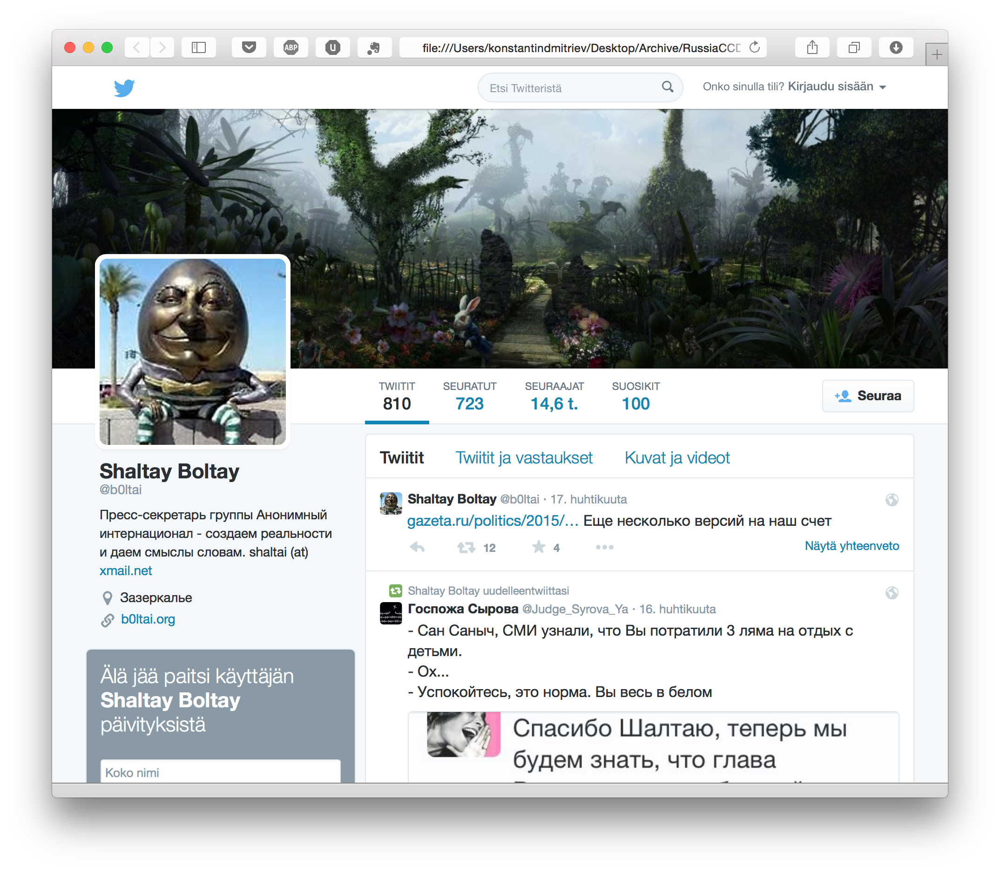
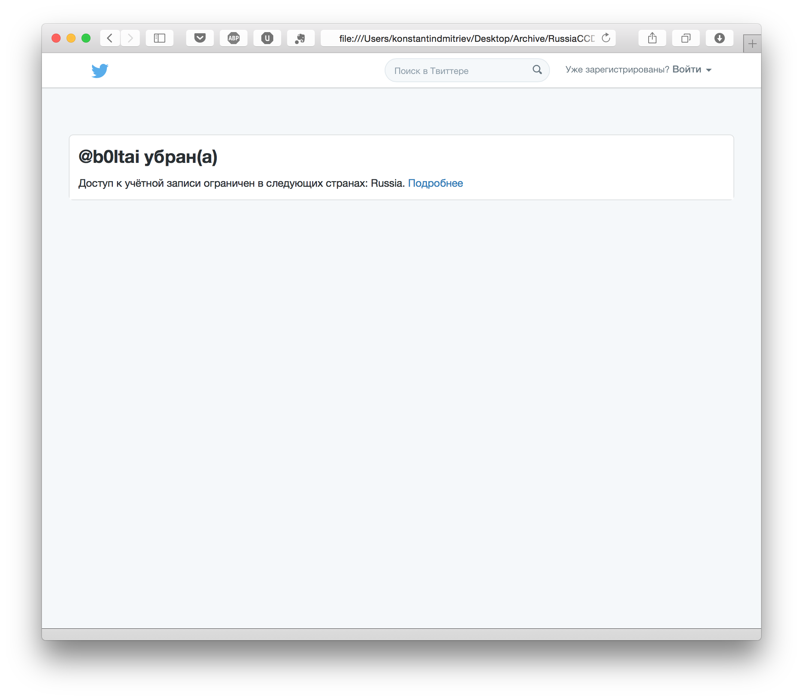

A Class Project for CSE534
Student Colaborators:
Jesse Brizzi (@jessebrizzi)
Konstantin Dmitriev (@dmitrievk)
Alan Tian (@alantian)
In this project we are proposing a survey of neighboring sovereign nations to modern day Russia to investigate any possible collateral censorship. Given the socioeconomic state of some of these countries there may be limited infrastructure for Internet access, which requires their traffic to be routed through Russian territory. Russia actively censors various websites and Internet sources based on various reasons.
Collateral Censorship, Russia, Block, DPI, DNS, IP.
Motivation
In the summer of 2008, when Russia’s mass media and telecom watchdog Roskomnadzor [^1] was re-established, the Russian Internet, or RuNet, changed significantly. This Federal Service is regulated and put into motion by two laws, - “On Protecting Children from Information Harmful to Their Health and Development”@krem1 and “On Information, Information Technology and Information Protection”@krem2. Both of them give judges a free hand in decision-making. As a result, a number of websites have been blocked quite chaotically, starting with opposition websites and articles, to Bitcoin communities and GitHub.
Sometimes such censorship systems can case collateral censorship, or damage. They block access to sites from users beyond those intended to protect@anon1. This projects goal is to examine the effect of such possible collateral censorship to the requests that are originating from outside of Russia, with the possible extension to other countries that maintain the censoring services. The result of this project can be used to create a detailed analysis of collateral damage caused by different types of censoring techniques, and to potentially discover the paths at fault.
Related Work
Not a lot of research has been done in the area of the collateral censorship between networks in different countries. Partly because the impact of Internet censorship on global Internet service is usually unintended, and the probability of getting any results is fairly small. However, China’s injection of forged DNS responses has been reported to cause large scale collateral damage by blocking outside traffic that traverses Chinese links @anon1. The analysis shows that in the most extreme case, 70% of the open resolvers from Korea suffer collateral damage for queries to .de domains. Upstream filtering can also be behind traffic blockage outside of a censoring area due to ISP routing arrangements (for example, the Indian Internet filtering some users in Oman who are not able to access certain webpages @iclab1).
Censorship tools
The Russian Internet Service Providers (ISPs) and government use a number of different censorship techniques to block access to “unwanted” websites. Fig. [fig:fig1] shows a chart of the most popular ones by the number of providers that maintain a particular method.
[ ybar, enlargelimits=0.15, legend style=at=(0.5,-0.15), anchor=north,legend columns=-1, ylabel=#providers, symbolic x coords=DPI-IP, IP, DPI-FULL, DNS, xtick=data, nodes near coords, nodes near coords align=vertical, x tick label style=rotate=45,anchor=east, xlabel=Blocking Method, x label style=at=(0.5,-0.25) ] coordinates (DPI-IP,430) (IP,235) (DPI-FULL,125) (DNS, 155);
Resources
As a main reference for blacklisted URLs, domain names, and IPs in Russia, we use lists provided by the ICLab, they are maintained specifically to test URL censoring. These lists are divided by country codes. Some websites are in English, some are in the local language and picked individually by the regional expert. They have content representing a wide range of categories:
Politics
Social (sexuality, gambling, and illegal drugs and alcohol)
Conflict/Security (armed conflicts, border disputes, separatist movements, and militant groups)
Internet Tools (web sites that provide e-mail, Internet hosting, search, translation, Voice-over Internet Protocol (VoIP) telephone service)
Challenges
Manually analyzing lists of the blocked URLs for some countries we realized that some of them have the same censored websites, which, if not taking this into account, would give us wrong results - we might mistakenly think that some country is affected by the Russian collateral censorship, when in fact it has its own censorship. In order to overcome this problem, we have refiltered the list of the blocked URLs for Russia, our main list, in a way that have only unique URLs, that are blocked only in Russia. This procedure reduced the size of the Russian list down to 141 URLs.
As a reference of the potential victims of the collateral censorship, we use telegraphy maps (Fig. [fig:fig3]), and the map of the supported countries for one of the largest Russian backbone service provider (Fig. [fig:fig2]), concentrating on the bordering countries.
Also we are using VPNs provided by IP Vanish ^2


Research Outline
Ultimate Aim
Our ultimate aim is to write an experiment in the form of Python scripts that will probe websites censored in Russia from various points in neighboring countries. This experiment will not only be able to compare the received web-pages with the blocked ones, but also return the score of the similarity between the received and the blocked web-pages. To collect the source code of blocked web-pages we use IPVanish and ExpressVPN servers.
In order to create this experiment, we use the following modules:
urllib - for network resource access;
socket - to get an access to the BSD socket interface;
ssl - to get an access to Transport Layer Security encryption and peer authentication facilities for network socket;
dnspython - to get an access to high and low levels of DNS.
and, of course, the OpenVPN ^3 client to connect to VPN servers. Also we utilize the scripts from Tunnelblick ^4 for connection setup.
Challenges
Given the possibility where no censorship leakage is found, we will restructure the experiment to try and prove our results are accurate, i.e. that there is little to no collateral censorship resulting from the Russian government. This is done by repeating the experiment multiple times at different times of the day, along with expanding our list of candidates for possible collateral censorship to other countries in close proximity geographically and in terms of Internet topology.
Methodology
In order to measure possible collateral damage caused by Russian censorship, we conduct an experiment that can be coarsely divided into 3 parts:
Set a connection to a VPN server from a list of examined countries.
Access and collect HTML code of web-pages that are blocked in Russia.
Compare the percent of similarity between web-pages access from Russia and outside of it.
The overall process is illustrated in Figure 4.

VPN
For the connections, we are facing the following challenges:
Access to web pages from different place, the basic need for our experiments, is required.
Renting machines, either physical or virtual, is beyond our consideration, because the renting is either too expensive, or just unavailable in several countries.
All communication, including data retrieval and other things like DNS request, should be done in the destination countries, because Collateral Censorship is sensitive to the path, which in turn is sensitive to DNS result.
We are using servers provided by IPVanish and ExpressVPN because they provide access from many countries. According to it’s website ^5, its servers “span 25,000+ IPs on 165+ servers in 60+ countries”. This is a huge advantage as countries near Russia, like Finland and Estonia, are among countries supported by IP Vanish, thus we can investigate the influence of Russian censorship on its geographical neighbors. Also, we are using a computer directly located in Russia to get more accurate result for Russia censorship.
For our VPN client we are using OpenVPN. Basically, we conntect to a OpenVPN server hosted by IP Vanish using configuration files provided by IP Vanish and associated credits. Also we are using scripts from Tunnelblick to handle setting-up / tearing-down the connection on Mac OS X systems. We are running OpenVPN in daemon mode, communicating with it via a telnet server open locally for management purpose.
Data Collection
The high-level description of the data collection algorithm is presented in pseudocode on Algorithm [algo:highlevel].
Input: ListOfCountries, ListOfURLs Establish a connection Access a webpage (timeout = 2 sec) Store its HTML code
The algorithm goes through every country in the list of selected countries, then it establishes a VPN connection, and going through all 141 urls from the list of blocked URLs in Russia, it accesses the webpage within 2 seconds timeout and stores its HTML code for the further comparison.
For the data collection purpose we implemented a special class -
CollectData. Its instance connects to a specified VPN
server and performs either collection of a single wep-page, specified by
a URL from multiple countries, or collects a list of web-pages, using
single VPN connection (Country major vs Website major order). This gives
us the option of targeting a specific website in a small time windows to
minimise differences in time sensitive content.
After the web-page access attempt, there could be four possible outcomes:
An original web-page.
A web-page with a removed part (partial censorship, Figure [fig:partial]).
A censorship’s system brochure web-page (Figure [fig:brochure]).
A failure to load a web-page.
In order to deal with the final case, we stop waiting for a response after 2 seconds (Timeout parameter).

0.3 
\
0.3 
Web Page Comparison
Web Page comparison is an essential part of our project. The aim is to compare similarity between different copies of a same page accessed from difference countries. Censorship usually alters the content of web pages, so if a pages is effected by censorship in one country, the content varies between a copy accessed from this country, and one from a reference country. In this scenario, comparing the similarity between these different copies provides us an efficient way to detect and quantify the content changes.
However, the content changes can also happen due to reasons besides censorship. Some of the reasons can be temporal, for example a change of time stamp in these copies are totally reasonable, while another example may be news block in some news sites. Also valid reasons are geographical customization, such as local news may vary from one place to another one.
These two kinds of content changes are different: The changes due to censorship are tend to replace the whole page, while the normal changes are more block-wised, and thus preserving general architecture of web pages. Therefore, Our algorithm should be sensitive to a fully change page, but meanwhile insensitive to block changes, especially those small ones.
\\( F_{0\dots n, 0\dots m} \gets 0 \\) \\( F_{n,m} \\)
We hereby propose the use of Longest Common Subsequence, or LCS, for scoring. LCS is a good metric for HTML file comparison, because it is relatively robust to block-wise content change, which means a DOM tree node is replaced by another one, while preseving other parts of the tree. The algorithm for LCS is detailed on Algorithm [algo:lcs]. More precisely, we use the following scoring formula: \\[ Score(s_1,s_2) = \frac{LCS(s_1,s_2)}{Len(s_1)+Len(s_2)} \\] to ensure that our similarity metric would not prefer longer/shorter web pages. This metric means that a larger score means larger degree of similarity, also the score is constrainted in a given range (\\( 0\leq score \leq 0.5 \\), so the results are comparable for all page length.
However, a plain implementation of LCS is time-consuming: It requires \\( O(n m) \\) time to compute where \\( n \\) and \\( m \\) are lengths of two strings, respectively. This is insufficient for HTML comparison because the average size of contemporary pages has already excessed \\( 1.6 \\) million bits^6, or \\( 200 \\) kilo-bytes.
\\( i \gets 1 \\) \\( j \gets 1 \\) \\( lcs \gets 0 \\) \\( F_{n,m} \\)
This means that we should need to use some algorithm which is more efficient. One of such an algorithm we are using is Sift3b @sift3b, which is an approximate algorithm with speed optimizations, as shown on Algorithm [algo:sift3b].
Sift3b approximate the longest common subsequence by setting an parameter \\( O \\), or max offset, and ignoring attempts to matching characters whose offset is larger than max offset. This means the running time of Sift3b is \\( O( (n+m) O) \\) where \\( n \\) and \\( m \\) are lengths of two strings, respectively. This means we can have some kind of trade-off, because a larger max offset means better approximation and slower running time. For our problem, we choose \\( O=130 \\) for a balance between accuracy and running time.
Results
After running the comparison algorithm and assigning every page a score, we measure the possibility of some country being affected by the collateral censorship by analyzing the data, same 141 webpages, but accessed from the USA. We ran the comparing algorithm once again, calculated the score for every page accessed from the USA, estimated the mean \\( \mu^{USA} \\) and the standard deviation \\( \sigma^{USA} \\). Then, we assume, that if some country has a mean value which is more than the mean value for the USA, then there is a high chance of the censorship leakage from Russia: \\[ \mu^{country} > \mu^{USA} + k\sigma^{USA} - country\ is\ affected \\]\ \\[ \mu^{country} \leq \mu^{USA} + k\sigma^{USA} - country\ is\ not\ affected \\]
For the final step, we’ve collected more than 25000 webpages, using IPVanish and ExpressVPN servers, the results are presented in Figure [fig:results]. This bar chart shows that 4 countries (Belarus, Estonia, Lithuania and Ukraine) show some signs of the possible censorship leakage.
There is another interesting finding. We were able to detect sings of the censorship leakage only from IPVanish vantage points. The possible explanation is that ExpressVPN circumvents the censorship on its own, since that’s what most of their users would want.
[ ybar, ymin=0.6, enlargelimits=0.15, legend style=at=(0.5,-0.3), anchor=north,legend columns=-1, ylabel=Score, symbolic x coords=Azerbaijan, Belarus, Finland, Estonia, Georgia, Latvia, Lithuania, Ukraine, Kazakhstan, Kyrgyzstan, Mongolia, Russia, USA, xtick=data, ybar=3pt, bar width=1 nodes near coords, nodes near coords align=vertical, every node near coord/.append style=rotate=90, anchor=west, x tick label style=rotate=45,anchor=east, x label style=at=(0.5,-0.25) ] coordinates (Azerbaijan,0) (Belarus,0.803) (Kazakhstan,0.728) (Finland,0.764) (Lithuania,0.806) (Kyrgyzstan,0.766) (Ukraine,0.814) (Latvia,0.784) (Estonia,0.8) (Russia,1.0) (Georgia,0) (Mongolia,0) (USA, 0); coordinates (Finland,0.702) (Belarus,0) (Lithuania,0.71) (Kyrgyzstan,0.735) (Ukraine,0.736) (Latvia,0.724) (Estonia,0.742) (Russia,1.0) (Kazakhstan,0.720) (Azerbaijan,0.722) (Mongolia,0.720) (Georgia,0.732) (USA, 0); +[error bars/.cd,y dir=both,y explicit] coordinates (USA, 0.717) +- (USA, 0.073);
(rel axis cs:0,0 |- axis cs:Belarus,0.79) – (axis cs:USA,0.79 -| rel axis cs:1,0);
Current Issues
A major obstacle that we plan to overcome in the future is the inconsistency of the censorship from our different viewpoints from within Russian borders. Using our various VPN subscriptions and a physical computer that we have access to in Russia we are observing different levels of access to certain websites. Our PC in Russia is censored in more cases then it is not when testing against the list of target websites. Where our VPN service through IP Vanish seems to get through to most of these websites. This may be due to the VPN company purposely fetching these locked websites as this would be a feature that most of its users would want or their servers are falsely labeled as being located in Moscow. We just happen to be in the fringe case of actually wanting to be censored.
We plan on either only collecting Russian samples from our dedicated PC or trying a difference VPN service. An issue may be similar de-censorship in the neighboring countries too, but we do not have dedicated machines in these locations to check. This may lead to a lot of invalid results in the end.
Future Work
Currently we plan on focusing on expanding our HTML comparison methods to try and find what type of things are being changed if only parts of webpages are being censored. To account for different dynamic content that may change from instance to instance (ads, time dependant information).
We have references to methods of figure printing the type of censorship being used from the Russian ISPs, we would like to integrate this into our project as well.
9
Anonymous, The Collateral Damage of Internet Censorship by DNS Injection. SIGCOMM Comput. Commun. Rev., July 2012.
“Law on Protecting Children from Negative and Harmful Information.” President of Russia. N.p., n.d. Web. 14 Feb. 2015.
Russian Federation: Federal Law No. 149-FZ of July 24, 2006, on Information, Information Technology and Information Protection (as Amended up to Federal Law No. 398-FZ of December 28, 2013). N.p., n.d. Web. 14 Feb. 2015.
C. Lab., Routing Gone Wild: Documenting upstream filtering in Oman via India. Technical report, Citizen Lab, 2012.
S. Zackwehdex, Super Fast and Accurate string distance algorithm: Sift3, Web post, accessed at May 1, 2015, available at\ http://siderite.blogspot.com/2007/04/super-fast-and-accurate-string-distance.html.
[^1]: Federal Service for Supervision of Communications, Information Technology and Mass Media (Russian:
Федеральная служба по надзору в сфере массовых коммуникаций и связи
)